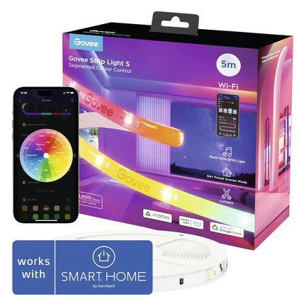
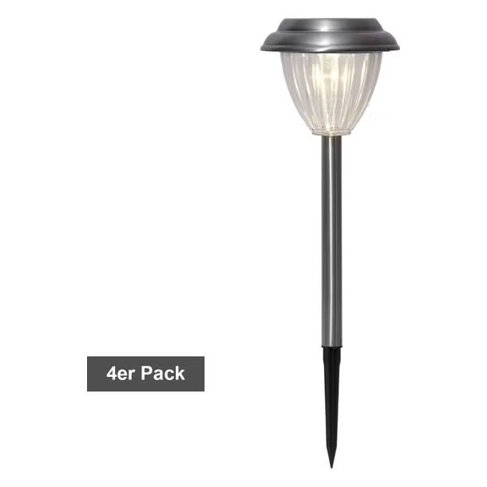
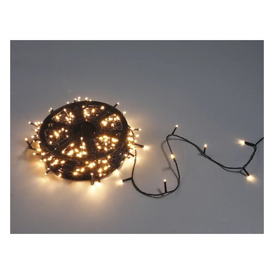
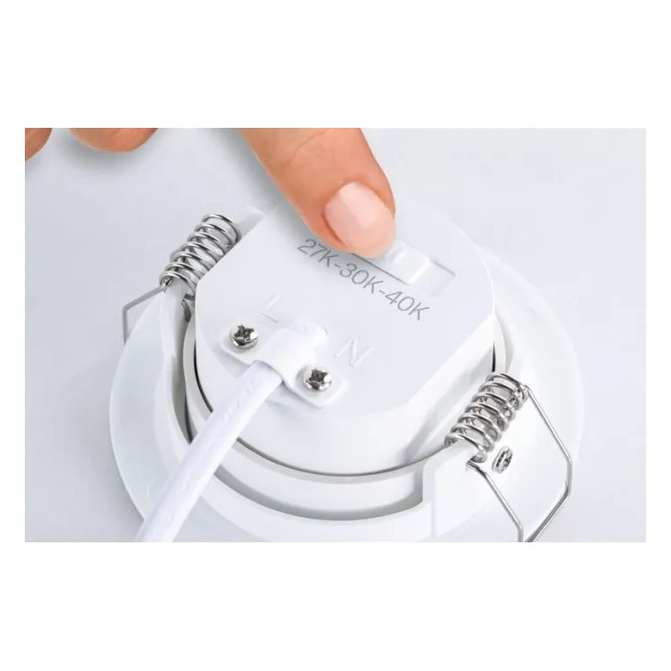
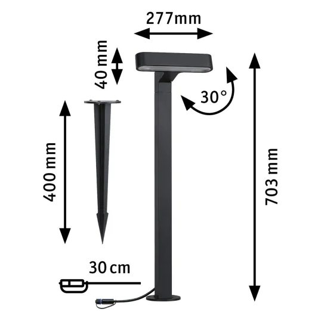

Home / Home & smart lighting / LED spot bulb GU10, 5 W, 4000 K

Illustration similar – shows the product type.
Home & smart lighting
LED spot bulb GU10, 5 W, 4000 K
Standard spot bulb for recessed spots and track systems.
The GU10 reflector bulb (230 V) is the most common spot base in German homes. Quality markers are beam angle, CRI of 80+ and flicker-free output. Dimmable versions need matching dimmers and cause more returns.
Technical data
| Base | GU10 |
|---|---|
| Power | 5 W (3–8 W) |
| Colour temp. | 2700–6500 K |
| Voltage | 85–265 V |
| Customs tariff number (HS) | 85395200 |
EU standards and regulations
LVD 2014/35/EULow Voltage Directive (CE)EMC 2014/30/EUElectromagnetic compatibilityRoHS 2011/65/EURestricted substances(EU) 2019/2020Ecodesign for light sources + energy label (EU) 2019/2015GPSR (EU) 2023/988Product safety, EU responsible person
Goes well with
More products in this category

RGBIC floor lamp 150 cm with app control (Wi-Fi/Bluetooth), remote control and music sync

Monitor light bar with asymmetric optics and adjustable colour temperature, USBSlim USB light bar for the monitor edge: asymmetric optics, full-spectrum LED (Ra > 95), five colour temperatures from 3,000 to 7,150 K.

Smart LED bulb E27, Matter over Wi-Fi, RGBTW (9 W, 800 lm)

RGBIC LED strip 5 m with app control (Bluetooth) and music syncIndividually addressable RGBIC strip on a 5 m roll with colour gradients, Bluetooth app, music sync and dimming; Wi-Fi and voice control only with a matching controller.

Cordless rechargeable table lamp, touch-dimmable, aluminium, 2,000 mAh, USB chargingCordless aluminium table lamp for terrace, hospitality and bedside with three-level touch dimmer, warm-white light and a choice of battery size.

Solar path lights 4-pack with ground spike, IP65, warm whiteFour ABS solar path lights with ground spike and dusk-to-dawn sensor for paths and beds, in warm white with an IP65 option.

LED fairy lights 26 m, 360 LEDs, indoor/outdoor IP44, timer, 8 modes

LED desk lamp, dimmable, colour temperature 2700–6000 K, touch control, foldable, clip-onFoldable clip-on LED lamp with touch dimming and three colour temperatures from 2700 to 6000 K for home office, study and bedside.

Rechargeable motion-sensor night light, magnetic, USB charging (6-pack)Cordless night lights with PIR motion and twilight sensor, rechargeable battery and magnet/adhesive mounting for wardrobe, hallway and stairs.

LED candle bulb E14, 4 W, 2700 KClassic C37 candle shape for chandeliers and wall lights.

LED capsule bulb G9, 3 WCompact G9 capsule replacing halogen pin lamps.

LED under-cabinet bar with motion sensor, USB rechargeableCordless light bar for kitchen, wardrobe and cupboard.

LED wall light up & down, aluminium, indoorDecorative wall light with up and down lighting.

LED recessed downlight round, 12 W, aluminiumSlim recessed downlight for suspended ceilings.

LED garden bollard light, IP65Low bollard light for gardens, driveways and patios.

Galaxy star projector, USB, wave effectNight-light projector for children's rooms and bedrooms.